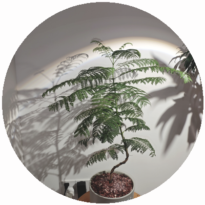
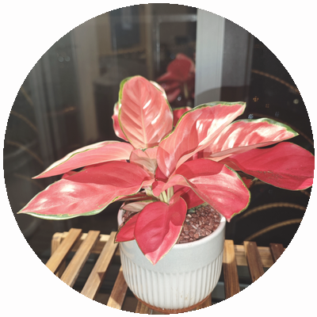
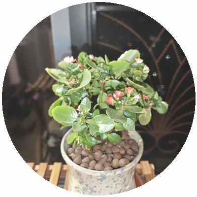
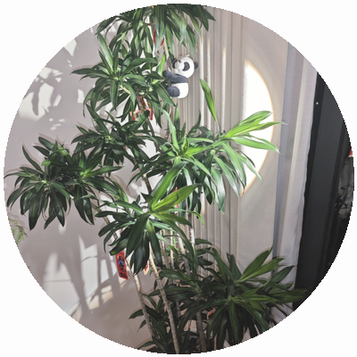
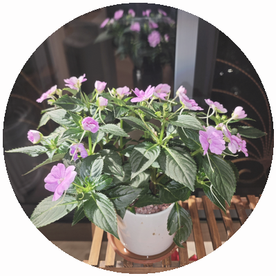
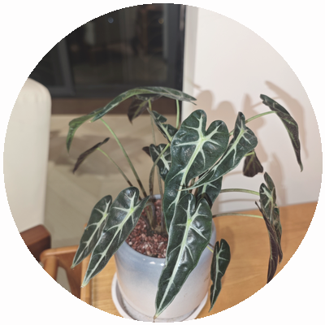

青舍
一花一世界 · 一叶一菩提
乙巳年五月十一 · 广州南阳台
28°
广州 · 晴
空气较干燥，观叶植物建议喷雾增湿。气温较高，注意遮阴。
今日待办
六株待浇

蓝花楹
Jacaranda mimosifolia
已逾期十五日
快渴坏了
浇透 · 二日周期 · 喜阳怕涝
点击浇水
水

红掌
Anthurium andraeanum
已逾期十五日
叶片微卷
保持湿润 · 三日周期 · 喜湿耐阴
点击浇水
水
我的植物
六株
蓝花楹
二日周期

长寿花
十日周期

百合竹
六日周期
红掌
三日周期

洋凤仙
每日浇水

黑叶芋
四日周期
园
花园
时
时节
我
我的